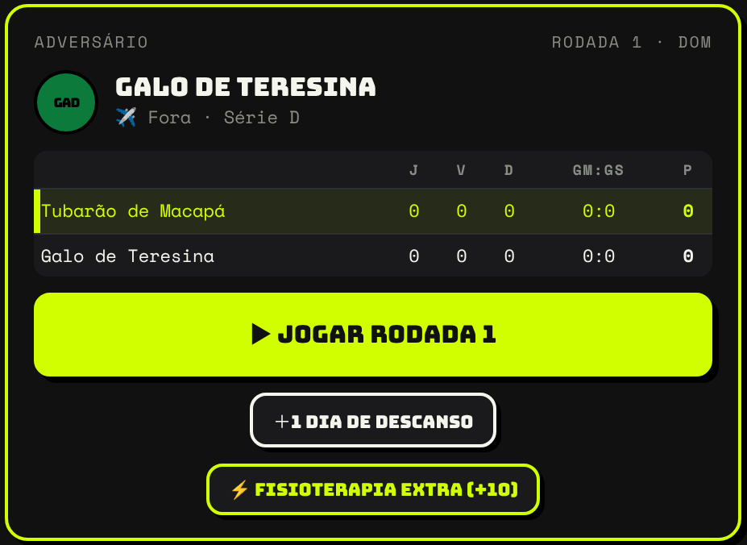

02 · Folga também treina
Um dia a mais
de
descanso.
Antes de apertar Jogar:
+1 dia de descanso
dá +2 de energia pro elenco todo. A
fisioterapia extra
dá +10, uma vez por rodada.

CATIMBA
.
FC
!
@catimbafcbr